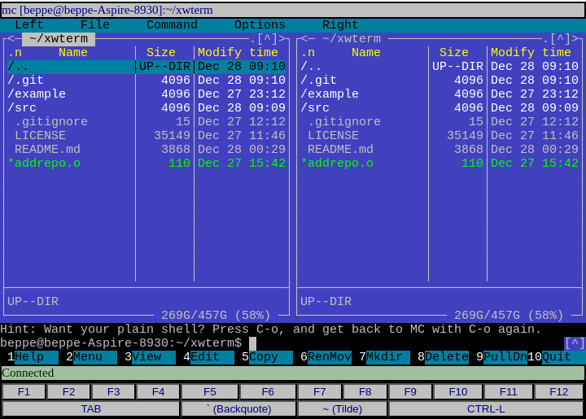
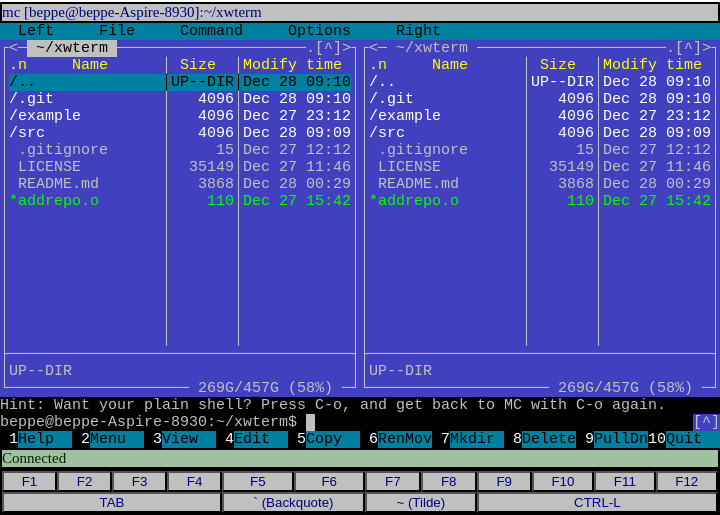

xwterm
Simple web Xterm and ANSI terminal emulator - pure JavaScript, no dependencies
Table of Contents
- Introduction
- Setup
- Usage
- Sample server
- About scrollbar
- Full documentation
- Live example
- Screenshots
- Coding conventions
- Caveats
- TODO
- Contributors
- Enjoy
Introduction
The goal of this project is to provide a simple, pure javascript terminal emulator frontend (i.e., the client side). Connecting to a terminal service is a user's responsibility. For testing purposes, a very basic terminal server is available here.
Setup
The source is a single JavaScript file (src/xwterm.js); once downloaded (e.g., by cloning the repository), it is ready to use. To produce a minified version, run make from the project's root directory. terser is required to do this. The minified file is dist/xwterm.min.js. You can also download the minified file directly from the GitHub releases page. It is recommended to use release versions, unless your goal is to contribute to this project, as the latest commit may contain experimental or incomplete code.
Usage
The following HTML code shows a minimal example of use. It generates a page containing only a terminal with default properties:
<html lang="en">
<head>
<meta charset="UTF-8">
<meta name="viewport" content="width=device-width, initial-scale=1.0">
</head>
<body>
</body>
<script type="module">
import "./xwterm.js";
var ansi = new AnsiTerm();
</script>
</html>
The only thing the programmer has to do is to create an instance of the AnsiTerm class.
You can find a more detailed explanation here: Basic example.
By default, AnsiTerm's constructor connects its main "div" container to the document body, but you can put a terminal inside a container of your choice by specifying its ID:
...
<div id="myterminal"></div>
...
var ansi = new AnsiTerm("myterminal");
The constructor also accepts some configuration parameters, which you can pass as an array of key/value pairs. The most important keys are:
nLines: number of text lines (default 25)nColumns: number of characters in a line (default 80)containerId: the ID of the container where you want the terminal to be placed (default "", which means that the constructor will use the document's body)channelType: the type of channel by which the terminal gets the stream of characters to display and sends events. "http" (alias "rest", default), "websocket", "dummy" or "custom" are recognized (see below for details).
Example:
var ansi = new AnsiTerm( { nLines: 40, nColumns: 120, containerId: "myterminal" } );
The terminal can use these kinds of channels to communicate with the server (NOTE: Here we use the term "server" in an extensive sense, to indicate any form of data source and destination that is suitable to be managed by a terminal.)
- HTTP
- WebSocket
- Dummy
- Custom protocol
A detailed description of channels is here: Communication drivers
Sample server
For testing purposes, you can find a minimal terminal server written in Python3 in the
example folder.
Do not use the example as if it were a real terminal server; it is meant only to familiarize yourself with the AnsiTerm class and ease its development.
The server implements both HTTP and WebSocket services on TCP port 8000 and 8001 respectively. By default, the server accepts local connections only
A detailed description of the server is here: Sample server. Specifically, it includes notes on configuring miniserver.py to work on embedded Linux systems that lack traditional package management tools.
About scrollbar
The terminal implements a history buffer whose size is configurable (default: 1000 lines). To navigate through the history, a scrollbar is provided. AnsiTerm utilizes the standard scrollbar widget provided by the platform, which may vary in appearance depending on the browser and system configuration. Although in the majority of cases this is satisfactory, there might be situations where a fixed layout is necessary, irrespective of the platform. For such cases, an implementation of a custom scrollbar is given in the additional source src/scrollbar.js, designed to ensure a consistent appearance across platforms. AnsiTerm (i.e., xwterm.js) looks for a public definition of GenericScrollBarAdder class, which is the main class exported by scrollbar.js module. If the class is not available, AnsiTerm defaults to an internal implementation that uses the plain, platform-provided scrollbar. So, to enable the custom scrollbar, it is enough to import scollbar.js before xterm.js and set to false the internalScrollbar parameter:
<html lang="en">
...
<script type="module">
import "./scrollbar.js";
import "./xwterm.js";
var ansi = new AnsiTerm( { internalScrollbar: false } );
</script>
...
</html>
Full documentation
A (still incomplete) documentation of the package, mainly classes and their methods, is here: API Documentation
Live example
You can test some working examples of xwterm here: Live examples. In these examples a simple JavaScript console is implemented as a replacement of a terminal server (no free terminal server for you here, sorry).
Screenshots
Here are some images taken while running the shell and some applications that require
full support of graphics functions (Midnight Commander, htop, vim). The last two screenshots have been taken
from the "multiple terminals" (example/multi.html file) example hosted by a Windows 10 and a Linux
miniserver.py launch respectively.
 



Coding conventions
If you want to contribute, please take a look at the coding rules used in this project first: Coding conventions
Caveats
Please remember that the project was born out of a specific need of mine in a controlled environment; to make it fully usable, a certain effort of generalization is still required.
Development and test have been done mainly on recent versions of Chrome and Firefox. Safari has been tested very superficially. No other browsers have been tested at this time.
About Safari, there is at least a known problem: iOS soft keyboard doesn't appear if the page doesn't contain an input field. AnsiTerm's canvas is not considered an input field by Safari, that's why I had to add a simple hand-made soft keyboard. This problem sometimes appears on Android devices too.
Internationalization, and encoding in general, is also an issue I neglected. My daily environment is Western Europe (Italy), where "latin1" or "Windows-1252" are sufficient. More sophisticated encodings are expected to be problematic.
TODO
Many things to do:
- Clean up code and add comments.
- Add better support for server-side sessions (e.g., cookies, access tokens...)
- Add support for hyperlinks and hyperlink sequences (e.g,
\e]8;;http://example.com\e\\This is a link\e]8;;\e) - Add custom CSS properties to configure the terminal. Currently, the configuration comes from a set of parameters passed to the constructor.
- Add a configuration item to choose the terminal mode (e.g., "pure ANSI", "xterm", "xterm-256"...).
- Add management of alternate character set (see "G0/G1" character set selection sequences).
Contributors
Thanks to these wonderful people for contributing! Full list here: Contributors